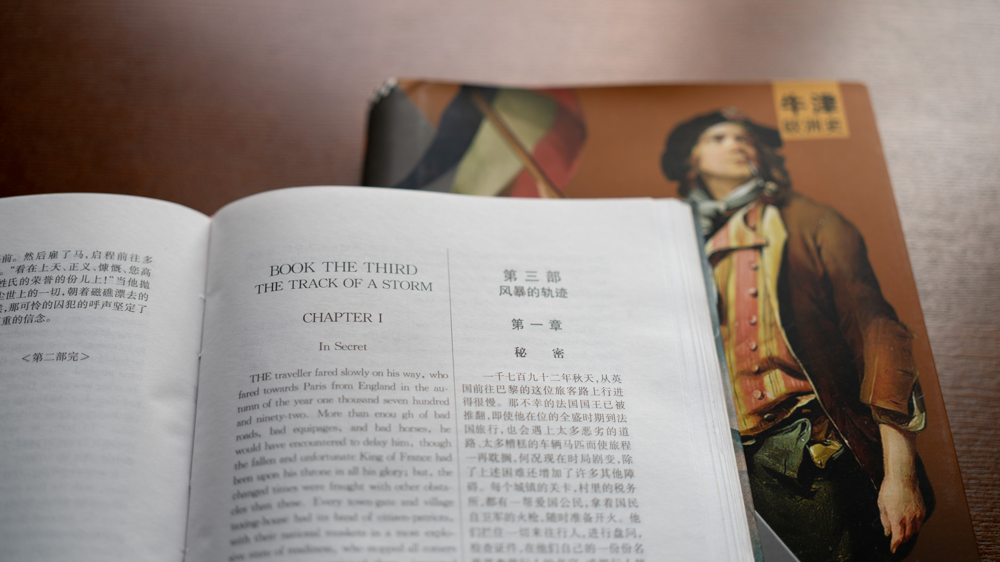
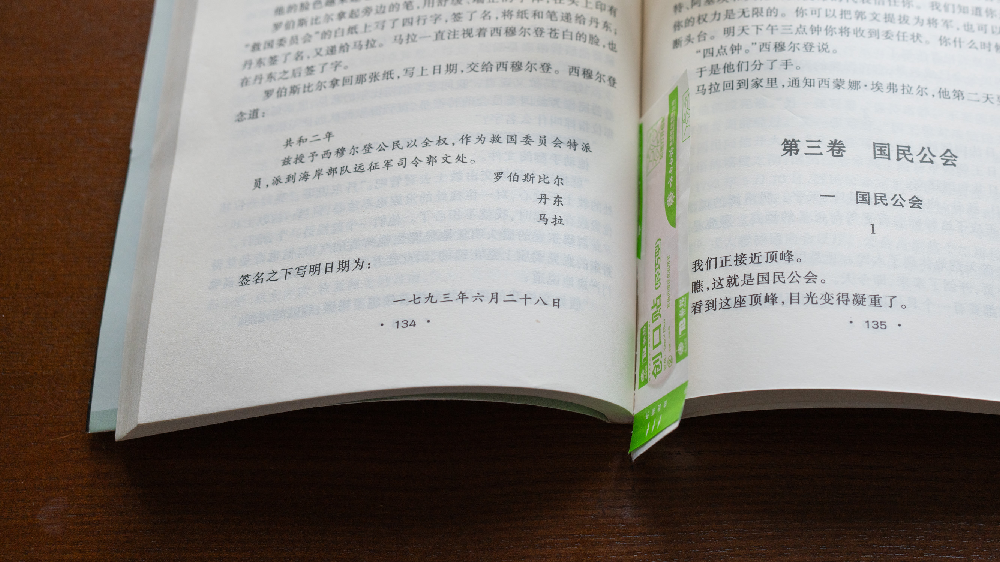

年轻时就读过雨果的《九三年》和狄更斯的《双城记》，但那时读得颇为潦草，记住的主要是故事，是旺代森林、巴黎街垒和断头台，也是雨果和狄更斯笔下几个人物近乎戏剧性的命运转折。至于这些故事背后究竟发生过什么，涉世未深的年轻读者不会认真去想。
前段时间翻了翻威廉·多伊尔（William Doyle）的《牛津法国大革命史》（The Oxford History of the French Revolution），便把这两部小说又找出来重读。这一次，小说好像不再只是小说。那些过去觉得有些戏剧化的情节，被放回十八世纪末的法国历史中，忽然显出了另一层分量。越读这一段历史，越感到难以忽略其中那些负面的东西：群众暴力，政治狂热，以抽象的“人民”之名消灭具体的人，以及一场革命在宣布自己掌握绝对真理之后，对法律、传统乃至普通生活的全面接管。也正因为如此，这次重读，感受大为不同。

两位作家面对的同一座断头台
《双城记》出版于1859年，《九三年》出版于1874年。两部作品都把法国大革命最血腥的年代放在故事中心，也都把小说的高潮推向了监狱和断头台。
《双城记》中，西德尼·卡顿利用自己与查尔斯·达尔内相貌相似的条件，进入监狱，换出达尔内，代替他走上断头台。《九三年》中，共和军青年将领郭文放走了已经被捕的保皇军首领朗德纳克，自己承担了必然到来的死刑。
情节确有惊人的相似，都颇具戏剧性，但两次牺牲并不是同一回事。
卡顿要救的是一个具体的人，也是他所爱的露西和她的家庭。他的一生颓唐、散漫，似乎从未真正实现过自己；最后却凭借一次完全出于个人意志的牺牲，使自己的生命获得了意义。狄更斯没有让他去拯救某种主义，而是让他保全一个家庭。宏大的历史在这里退到远处，最重要的是人与人之间的爱、忠诚和承担。
郭文面对的则是一道更为残酷的政治伦理难题。朗德纳克是“反动派”的军事首领，绝对属于拿枪的敌人，按革命法令当然应当被处死。然而，当他本来已经逃脱，却为了从大火中救出三个孩子而折返时，郭文不得不重新面对眼前这个“敌人”。一个在政治上有罪的人，是否会因为一次真正的人性行为，而重新取得作为人的尊严？革命法令要求处死朗德纳克，郭文的良知却无法对刚刚发生的一切视而不见。
雨果把冲突推到了极端：朗德纳克因救孩子而被捕，郭文因释放朗德纳克而被处死，郭文的老师西穆尔登在下令执行死刑之后又开枪自尽。每个人都服从自己的信念，每一种信念又都把人逼向毁灭。
在郭文的思想斗争中，雨果写下了一句概括全书精神的话，也成为流传甚广的一句名言：“在绝对正确的革命之上，还有绝对正确的人性（也有译为‘人道主义’）”。这句话其实是在向一切自称“绝对正确”的政治力量划出界线。
狄更斯的警告更冷峻
狄更斯并没有替旧制度辩护。《双城记》对法国贵族的傲慢、残酷和麻木写得毫不含糊。马车轧死孩子以后，贵族扔下一枚金币；农民的生命在他们眼中轻如尘土。德发日太太一家的仇恨，也不是从虚空中生出来的。旧制度制造了屈辱、饥饿和冤屈，最终也制造了自己的掘墓人。
然而，理解仇恨的来源，并不等于认可“仇恨”通过革命取得的一切权力。
大革命爆发并取得胜利之后，被压迫者不再只追究有罪者，而开始按照出身、姓名和关系来决定谁应当死亡。德发日太太手中的编织物，起初像是一部民间的苦难档案，后来却成为一份不断扩张的死亡名单。复仇一旦成为制度，个人就很难再凭自己的行为证明自己。达尔内拒绝家族的特权，也没有参与叔父的罪恶，但在革命法庭上，他首先仍是一个埃弗雷蒙德。
这正是《双城记》最令人警惕的地方：革命原本以反抗世袭特权开始，最后却可能用另一种方式恢复“血统决定命运”。只不过从前是因为出身高贵而享受特权，此时则因为出身高贵而承担原罪。判断一个人的，不再是他做过什么，而是他属于哪一类人。
狄更斯写革命群众时带有明显的英国人视角，其中当然不乏夸张和恐惧；他笔下的巴黎常常像一片上涨的海，个人很快被淹没在集体情绪中。但我现在更愿意认真对待这种恐惧，而不是简单把它看作保守主义偏见。一个经历过长期压迫的群体，一旦确信自己的痛苦赋予了自己无限的道德权利，受害者也可能变成新的加害者。
法国大革命废除了等级特权，传播了公民、权利与民族国家等现代政治观念，这些历史作用无法抹去。但它的恐怖也不能仅仅用“过火”轻轻带过。真正值得追问的是：为什么一种以解放人为名的政治，会逐渐把具体的人变成阶级、派别和血统的符号？为什么一种自称代表人类幸福的事业，反而能够要求无数现实中的人先为未来献祭？
雨果仍然相信革命，但他把人性放在更高一层
与狄更斯相比，雨果对大革命抱有更复杂、也更深的感情。他既看见旧制度的腐朽，也相信共和国所代表的历史方向；但他不能接受革命以未来的名义取消当下的人性。
《九三年》写的不是巴黎街头，而是旺代内战。这里没有清楚整齐的善恶阵营。朗德纳克代表旧制度，残忍而强悍，却会为三个孩子返回火场；郭文忠于共和国，却反对用恐怖建立未来；西穆尔登廉洁、坚定、毫无私欲，恰恰因此更危险——当一个人把全部道德热情都交给某种绝对信念时，他可能在毫无个人恶意的情况下，成为最严酷的执行者。

西穆尔登不是一个贪婪的暴君。他爱郭文，甚至把郭文视为自己的精神之子；然而在革命法令与郭文之间，他只能选择法令。他在处决郭文的同一时刻自杀，说明人的感情并未真正死去，但也说明它醒得太晚：命令已经执行，断头台已经落下。
雨果没有把人道主义当成革命胜利以后才有余裕讨论的装饰，而是把它看作判断革命本身是否正当的最高尺度。若为了未来的人类可以任意牺牲眼前的人，那么所谓未来很可能只是一个无法验证、却可以不断索取生命的借口。
雨果的这一点值得赞同。不过，雨果似乎过于相信，只要把“绝对的人性”放在“绝对的革命”之上，革命就可能得到净化；狄更斯则有更多的怀疑：当暴力、仇恨和集体狂热已经成为政治机器时，是否还存在一只能够及时踩下刹车的脚。在这一点上，我更倾向于狄更斯。
旧制度确实必须改变，贫困和不公也不能依靠劝善消除。但改变社会并不天然赋予任何人无限权力，更不能使杀戮因为冠以“人民”“历史”或“未来”的名义便成为正义。从1917年的彼得格勒到1975年的金边，二十世纪许多革命后来表现出的政治狂热、阶级划分和对个体生命的轻视，使人无法只把法国大革命的恐怖看作一次孤立的历史意外。它们之间未必存在一条可以简单画出的直线，却有一些令人不安的共同逻辑：相信自己掌握历史方向，把异议者变成人民之敌，为了尚未到来的天堂，要求现实中的人先穿过血海（此处借用了一下那位很早就把苏俄革命看得很透彻的诗人徐志摩的用语）。
重读之后
年轻时读这两本书，感到震撼的自然是几个主要人物跌宕起伏的命运逆转；重读之后，更令人在意狄更斯和雨果提出的那条界线：无论一个目标多么宏伟，都不能取消人作为人的价值。
两部小说都没有给法国大革命作出完整的历史判决，它们本来也不是史书。但文学有时比史书更能让人看见政治观念落到个人身上以后，究竟意味着什么。史书记录政权更迭、法令、战争和死亡数字，小说则把一个人从数字中重新辨认出来。
历史让人们懂得，判断一种政治理论和体制，不能只听它宣称要建立怎样的新世界，或许更应该看它如何对待一个无辜者，一个异议者，一个战败者，甚至一个敌人。因为宏大的理想总能找到漂亮的语言，真正困难的，是在确信自己正确的时候，仍然承认别人是人。